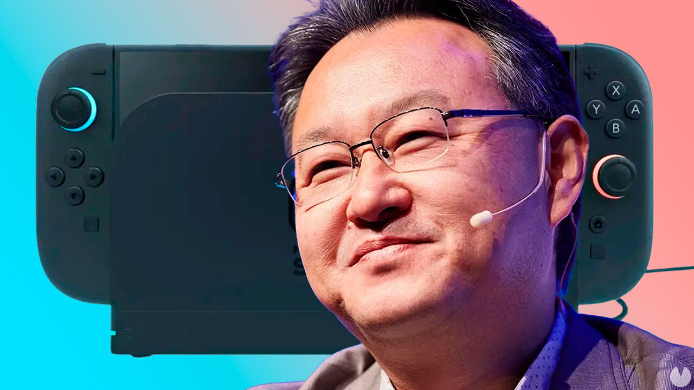
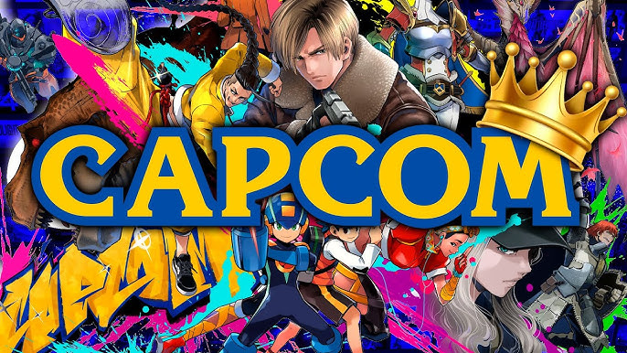
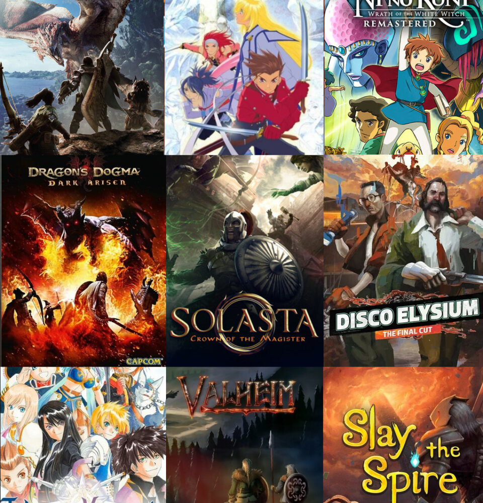
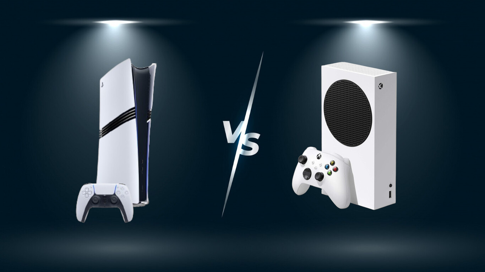
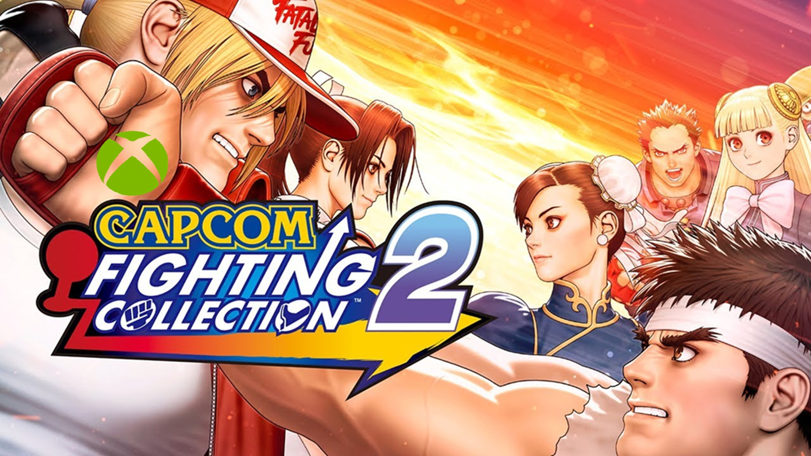
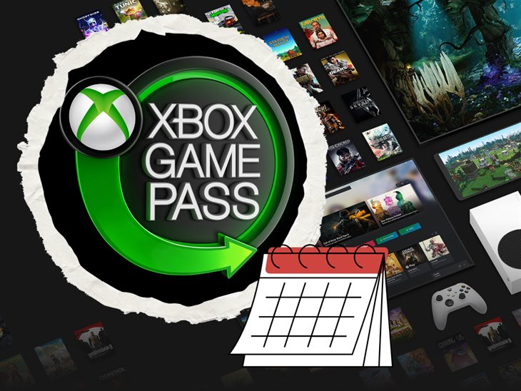
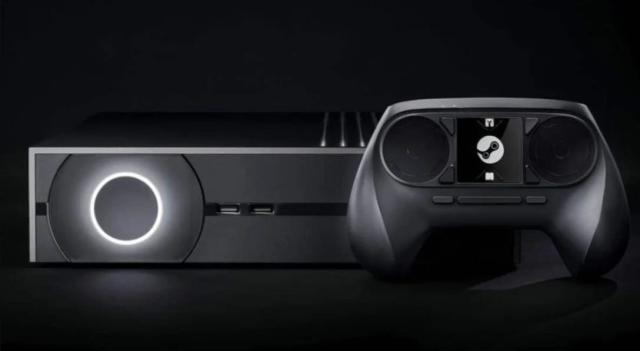
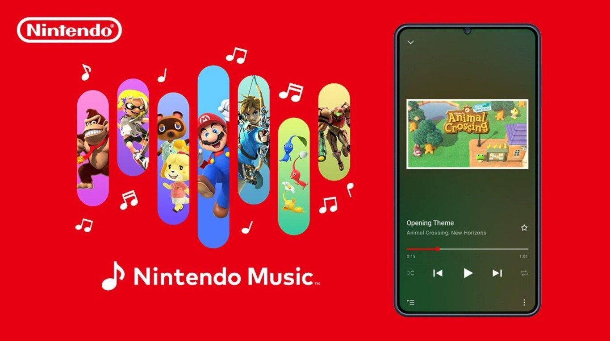
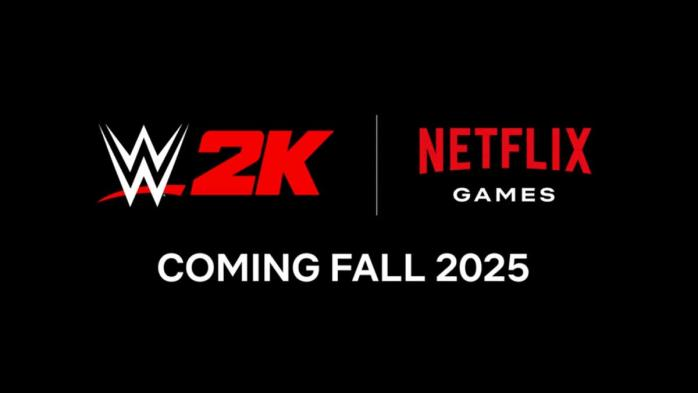

Shuhei Yoshida Comenta sobre Nintendo y PlayStation
Shuhei Yoshida, exdirectivo de PlayStation, expresó su decepción con la presentación
de Nintendo Switch 2. Esperaba que el anuncio fuera más impactante y sorprendente,
pero solo destacó la característica de ratón en los Joy-Con como una novedad interesante.
Yoshida mencionó que esta función podría
ser útil para juegos como Call of Duty, ahora que la saga regresa a plataformas de Nintendo1.
Ir review

Remasterización de un Juego Clásico de Capcom
Aunque no se ha anunciado oficialmente cuál es el juego clásico que Capcom remasterizará este año,
la compañía ha estado trabajando en
varios proyectos similares recientemente. Estos proyectos suelen generar gran expectación entre los fanáticos.
Capcom está trabajando activamente en revivir sus franquicias clásicas a través de remasterizaciones y nuevas entregas.
La compañía busca aprovechar el interés renovado por sus
títulos icónicos mediante mejoras gráficas y técnicas para adaptarlos a las plataformas actuales. Además:
Ir review

Reseña: El mejor RPG del año
Avowed
Género: Rol y acción (Fantasía)
Desarrollador: Obsidian
Fecha de lanzamiento: 18 de febrero (PC, XSeries)
Avowed es uno de los juegos más esperados para 2025.
Ambientado en el mundo Pillars of Eternity, promete ofrecer un universo rico con personajes
interesantes y un sistema de combate versátil.
Su capacidad para jugar tanto en primera como en tercera persona lo hace muy atractivo.
Ir review

Nuevo juego de mundo abierto sorprende a los fans
La batalla entre PS5 y Xbox Series X sigue siendo un tema candente en el mundo del gaming.
Ambas consolas ofrecen características impresionantes, pero cada una tiene sus ventajas únicas.
En cuanto a hardware y rendimiento, la Xbox Series X cuenta con una GPU más potente,
con 52 unidades de cómputo que alcanzan los 12 TFLOPS, superando los 10.28 TFLOPS de la PS5. Además, su CPU opera a frecuencias ligeramente más altas en algunos casos. Sin embargo, la PS5 destaca por su velocidad de almacenamiento SSD interna más rápida (hasta ~9 GB/s),
lo que reduce significativamente los tiempos de carga.
Ir review

Capcom Fighting Collection 2 Llega a Xbox
La colección incluirá varios juegos clásicos de lucha y se estrenará en Xbox tras
anuncios previos sobre nuevos detalles y paquetes incluidos.
Esta colección promete ofrecer experiencias retro renovadas para los jugadores.
Estos juegos ofrecen un apartado online con rollback netcode para partidas multijugador sin lag, un modo entrenamiento
mejorado y una galería extensa con ilustraciones
Nuevas Características
Algunos títulos como Project Justice, Power Stone 2 y Capcom vs. SNK 2 contarán con nuevos soundtracks
que incluyen versiones alternativas de las canciones clásicas
Ir review

BXbox Game Pass Recibe Nuevos Juegos en Febrero
Microsoft anunció nuevos títulos para Xbox Game Pass en febrero,
lo cual es una buena noticia para suscriptores sin necesidad del paquete Ultimate.
Esto refuerza el valor del servicio al ofrecer contenido fresco regularmente.
Nuevos Juegos en Xbox Game Pass para Febrero
Far Cry New Dawn - Disponible desde el 4 de febrero (Nube, Consola y PC) para Game Pass Ultimate, PC Game Pass y Game Pass Standard45.
Another Crab's Treasure - Lanzado el 5 de febrero (Consola) exclusivamente para suscriptores de Game Pass Standard16.
Ir review

Valve Considera una Consola Basada en Steam
Según reportes no confirmados oficialmente por Valve, podrían estar planeando
desarrollar una consola basada en Steam para competir directamente con PlayStation y Xbox.
Esto implicaría un mayor compromiso con hardware propio por parte de Valve.
Ir review

Nintendo Music Agrega Soundtrack Clásico
La aplicación Nintendo Music agregó recientemente el soundtrack completo del clásico
juego Super Mario World originalmente lanzado para SNES (Super Nintendo Entertainment System).
Este movimiento muestra cómo Nintendo sigue celebrando su legado musical.
Ir review

WWE 2K Llegará a Móviles a Través de Netflix Games
WWE 2K Mobile se lanzará hacia finales del año 2025 mediante Netflix Games,
prometiendo llevar la emoción del wrestling profesional a
dispositivos móviles por primera vez bajo esta plataforma.
Ir review